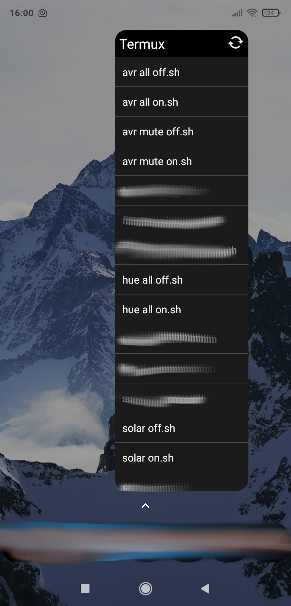
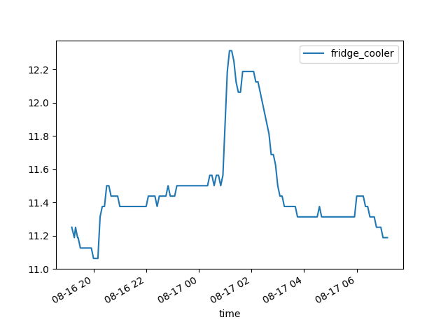

What
My small Raspberry PI Home-Server failed once again after approx. 2 years of operation. This time the SD-Card literally burned up. I’ll reinstall it, document the process and share some insights I’ve had from over a decade of running home servers.
Contents
When
History
I’ve been running servers for well over two decades now.
Currently my home server is a simple single board computer with very light weight workloads: Synchronising calendars, synchronising finances, some file sharing, smarthome sensor data logging and plotting graphs. I’ve moved by web page hosting elsewhere and have omitted most other services that were high on maintainance and not so useful after all.
One of the first ones was an old Windows machine running Microsoft’s Web-Server, the “Internet Information Services” (IIS). This was around 2001 and it got littered with viruses at a rate you would not believe.
I’ve run Linux with Apache-Webservers during my student days on an old Acer Extensa 2900 LMi laptop.
During the “home-theatre pc” (HTPC) hype I was running first an Asus e350 board with 6 S-Ata ports and later an Asus j3455 for HDMI output. On the later, during the beginining of the Covid pandemic, out of boredom and seeking to learn new technologies, I went all out and installed some twenty Docker services.
Upon realising I’m consuming about 60 W continiously and that that amounts to serveral hundred Eur anually in electricity fees I stepped down to a Raspberry Pi 3B+.
Background
Lessons learned regarding maintainance - What I don’t use anymore
There is no better way than home servers to shoot yourself in the foot with maintainance effort. Here are some things I’ve used in the past that I now dodge.
I try to be pragmatic, avoid single-points of failure, use easily recreatable standard configurations and take as many sources of issues out of the equation as possible.
Matrix Chat Server
Remember the days when you simply had an MSN/Windows Messenger installed? Then perhaps additionally ICQ Messenger and some others.
At the time there were universal chat clients like Trilian and Pidgin. These were extensible with plugins. Most chat services supported XMPP the “universal messaging standard” [1]. You could have one chat application to communicate on multiple char services.
That went away when companies started trying to retain users on their platforms. We now have WhatsApp, Facebook Messenger, Telegram, Apple iMessage and so forth. The only way to use them is by installing the official smartphome apps and/or/in combination with their poorly designed web interfaces. No interoperability what so ever.
So some years ago I thought it would be great to get back to one unified chat application in order to not have to install all these data gathering messengers on my phone.
The only half way viable option is running a Matrix-Server [2].
The Matrix-Server is one Chat-Server you run. You can connect to it via client apps on your phone such as “Element” [3]. And in order for Matrix to access, for example, your WhatsApp messages you need to run:
- the matrix server
- the element app on your phone
- the matrix-whatsapp-“puppeting bridge” that connects to the whatsapp web interface
- whatsapp in an android emulator
- and in order to connect the web interface you need get a QR code into WhatsApp running in the Android emulator, e.g. by a simulated web cam.
- an additional phone with a sim-card as WhatsApp requires a valid phone number
You then get
- a crazy unstable convolution of services
- insane maintainance effort
- routine incompatibilities
- connection dropouts
- no way to cancel whatsapp calls, incompatibilities with sent files, emojis, etc
- frequent android emulator crashes
There is no single thing I’ve wasted more time with to get running and then abandoned all together.
In short: use E-Mail, Phone, SMS or get people to move to Jabber - someone has to make the first step.
Wordpress
I’ve had web pages since the 2000s. Back then, in the Web 1.0, we would write an *.html-page and push it to an FTP-Server. With dynamic web pages, “Asynchronous JavaScript transfer” (AJAX) and the advent of Web 2.0 some things went overboard.
When I started blogging more frequently I was persuaded into running a Wordpress instance instead of static webpages.
These wordpress instances
- require you have more expensive web hosting than for static web pages. Because they will run *.php files
- are constantly outdated
- use a metric ton of plugins that are maintaned by few and frequently become incompatible
- are hard to backup due to the sql databases on the backend that they use for more performance
- still run extremly slow due to rendering the page for every single visiting
- require more disk space, more bandwith, more server performance
- you should probably run an additional caching web proxy to take load off of the wordpress server
In short wordpress is totally over-engineered for any sort of personal blog.
After giving up on blogging due to the convoluted interface and the frequent issues I moved back to *.html-pages and then to static page generators like jekyll.
When my webhosting increased prices once again I quit the contract and moved my page to GitHub-page. Since then
- free web hosting with GitHub
- no more plug-in/update issues
- no security vulnerabilities
- hardly any downtime
- fast page loads
- easily write new posts in markdown instead of in that strange rich text editor in the browser.
- properly back them up in Git versioning and diff-compare them
All of these wordpress plugins maintained by single people around the world for instance to add syntax highlighting or analytics to WordPress that you can just add to your page by simply copying a 10 line snippet of HTML/JavaScript into your pages. Using the convoluted WordPress for that - do you really want ot be that guy?
In short: Write *.html or use a static-page generator like Jekyll instead. Host on “dumb” servers, GitHub pages or similar.
Docker
Docker is a controversial one. I’ve used Docker for about a decade now (it was introduced in 2013). There are definitely sensible use-cases - your own personal home server probably isn’t.
Let me breakdown what Docker promises to do for you:
- a) make reinstalling services easier through scripting and reproducability
- b) make running services “more safe” by isolation
- c) and the ability to reset the container
- d) a community effort in maintaining these Dockerfile scripts
- e) …?
To this I say
- a) Reproducability can be achieved by (ansible) scripts or proper copy-and-pastable documentation. Unless you like old versions forever, never want to improve anything, you’ll eventually have incompatibilities nevertheless.
- b) A Docker container can be hacked even more easily due to old versions and provides full root inside the container, which can be used to wreck havok on your network. Also: it’s your home server, so who cares? And Docker does nothing different than combining Linux isolation best pracitices. We have SELinux, cgroups, user names, chmod, chroot, …
- c) more like an additional unnessesary community dependance - with a lot less documentation than the underlying services would have had
- d) …so a lack of persistance is now a feature. In practice your containers will be running 24/7. As soon as you reboot them they’ll fail and require substantial debugging effort - most of the time.
- e) you won’t learn how the underlying stuff actually works unless your stuff doesn’t work - it won’t - and then you’re fixing the issues in a much more convoluted setup than if you were running on bare metal.
Here is what it adds:
- for the simplest use cases upwards of 5 gigabytes of disk space usage. If you’re editting and rerunning Dockerfiles you’ll fill your hard disk at a mindblowing rate.
- because you’re basically installing entire libraries from other operating systems for compatibility that the Dockerfile is inheriting from
- multiple copies of the same web servers, because each Dockerfile brings it’s own lighttpd/apached/nginx along
- you then need a reverse proxy, probably another nginx, to make it all appear under the same domain and port
- additional trouble of port forwards and volume mounts. Confusion in the configuration files.
- access of configurations and logs only by entering and exiting running containers
- services inside Docker containers generally run with full root
- by nature of Docker outdated software versions
- configurations of your servers in the Dockerfile made by someone you’ve never heard of
- frequent incompatibilities when that docker container changes
Let me elaborate further:
-
A classic bug is when you’re running “docker-compose”: So you’ve got everything set up running great. Then after a year or so someone trips your power cord. You reboot and, since you probably forgot to lock the hashes in your docker-compose.yml on all of your docker images, the first thing that happens is docker will update all containers. Incompatibilities will be introduced simultaniously to 3 of 5 containers and you’re left debugging for the rest of the day or week.
-
Also fun are parsing bugs in the Dockerfile variables: Ever had a password with an apostrophe? Good luck debuggin the heaps of poorly written Bash scripts used in theat Docker container.
-
or missing features all together that you have to add into those Dockerfile-scripts
In short: Trust me, just run servers on bare-metal.
Video Disk Recorder, VDR
When linear television became less and less watchable due to more and more advertisements - there’s a pattern here: capitalists in seek of profits are destroying so much - I set up a hard disk recorder.
The “Video Disk Recorder” (VDR) connected to a DVB-S2 USB satellite reciver (Hauppauge, TechniSat, …) would record scheduled shows onto a large array of hard disks.
This worked well, but has draw backs
- need to run a powerful server with large hard disks consuming a lot of power 24/7
- bad weather conditions would block satellite reception
- if you wanted to watch tv in parallel you needed a Twin-LNB
- we had a satellite dish on our balcony
- the disk space would run out quickly. I’d have to edit out advertisements and compress the videos.
Nowadays I just
- use a Telestar DigiBit Sat2IP device that provides the satellite television feed on my network
- then I watch with either VLC on PC, Laptops, Phones or on the television using our Nokia AndroidTV streaming box and VLC running there
- I don’t bother with recording it. Generally we hardly watch that ad-riddled garbage anymore and resort to paid streaming services or DVDs/Blu-Rays we borrow at the local library or buy from from online stores.
In short: Linear TV is dead. Use ad-free paid streaming. Get optical Media.
OpenHAB / HomeAssistant / Node.RED
For smart home control and interfaces it may seem like there is no way around OpenHAB, HomeAssistant, ioBroker, etc… They all tend to become very complex over time and riddled with incompatibilities in the smarthome device bindings. Often they consume so much RAM they won’t even run on a 1 GB Raspberry Pi 3B+.
My OpenHAB installation failed so frequently we went back to just using the Philips Hue physical buttons or the Philips Hue App. Even after fixing the OpenHAB instance we were just so used to hitting the physical button or opening that Hue-App, that we didn’t use OpenHAB even if it did run.
It just wasn’t worth the effort of maintaining - at least not for lighting contol.
What do Smart-Home automations promise
- a) a unified interface of all your devices
- b) freely configurable automations
- c) control from all over the world
- d) more ease of use
Regarding this I found that
- a) we don’t need a single interface. We need to our control lights. For basic automation I can use Python scripts that connect to the various smart home device hubs that run on our computers/phones in Termux. If I need to plot a graph of something I can use a Python script.
- b) things like irrigation pumps are time-controlled and configured once. I don’t need a feedback loop between soil moisture and my lighting. If I did I write a custom script Python for that that runs in crontab on my server.
- c) access from all over the world invites intruders
- d) in my experience these systems introduce a single-point of failure and require a high maintainance effort
As mentioned above for advanced use-cases you can even have Python scripts reading and writing to your Smarthome device hubs via REST-APIs. I’m doing this for the FritzBox, Philips Hue Lighting, my VictronOS Solar controller and Bosch Smarthome Heating controls. There are heaps of example code for this on the internet.
In short: These are by defintion single points of failure. Don’t run this buggy resource hogging high-maintainance stuff. Just use the manufacturer apps and physical buttons. Don’t run too many different smarthome systems. If you need clever automations write a custom 10-20 line Python script to do it.
Grafana
An interesting use-case for home-servers and smart home systems is to do data logging and then visualize that data. For instance, if you want to visualize the temperature curve of your refridgerator.
Now for some reason we are led to believe we need complicated micro-services to do this.
My graphs are produced by just 19 lines of Python code as you’ll see below. They write images to the web server directory (/var/www/) to make the graphs accessable from any web browser on my network. Such code can either be run by a web server hook or by routenly by an entry in the Linux crontab.
You can easily go overboard in configuring the plot to you liking. There are heaps of Matplotlib example available online.
In short: Write simple plotting scripts in Python or similar. Make them accessable by writing them into your web server root directory. You’ll learn more, have more customisation, less frustrations, less dependencies and will consume less resources on your server.
Pi-Hole
The Pi-Hole ad-blocker is a great piece of software. Yet I’ve also abandoned it for one simple reason: If it fails, and it will, then you’re home internet will go down. It’s another one of those “single points of failure”. And if you’re on an important video call for a job application or work, you’d feel really dumb, if it fails and you get disconnected.
I’ve found that it is of no help, when I’m outside of my home, as I generally don’t VPN into my home network to surf the internet - there would be a significant performance toll on that.
The easierst solution, with a similar effect, is to run “ublock origin” addons across all your devices. It’s also easier to temporarily disable, when a web page doesn’t work properly due to an blocker.
Unless you have you run your own company and you’re blocking ads for your employees, it really doesn’t make too much sense to have a centralized ad blocker. Also there are privacy concerns: I don’t want to see the domain names of pages my friends are accessing on home Wifi.
It is advantagous for those TV streaming sticks where you can’t install an ad blocker, though.
In short: Just use the free and open-source browser addon uBlock Origin.
Guacamole
Apache Guacamole [4] is a really cool remote desktop gateway. Guacamole runs its own Apache Tomcat server. You configure your web server to reverse proxy to it. Then you can log in with a web browser from anywhere in the world and open remote desktop or VNC connections to devices on your home network. This is great, if you have want to be able to come back to your graphical user interface from anywhere.
The draw back is that it lags and consumes a lot of bandwidth. It’s also a security vulnerability. With graphical interaction there is also no good option for logging user action and so you won’t be able to tell what an intruder did, if he gets access.
While this makes sense in some corporate scenarios, for your home server and if you’re used to Linux it’s much more easier, faster and safer to just control your servers via SSH. SSH has optional X11 forwarding built-in, if you really need to view your Linux desktop.
In short: use SSH or purpose-built web interfaces to control home servers instead
Stability
Of course full-size servers are many times more reliable, but they are also much more expensive and consume much more power. So, in residential settings, we have to make due with single board computers such as the Raspberry PI. Over the years I’ve found fixed for some of the most common stability issues with Rasberry PIs in 24/7 operation.
Avoid SD-Cards
I’ve had three or four SD cards either not work at all or burn up within a few years in Raspberry PIs.
Then I learned that Raspberry PI 3B+ and most models onward can boot from USB-Sticks. USB-Sticks are less compact, produce less heat and can tolerate more write cycles.
Linux generally, unless configured otherwise, will write a lot of log messages to disk. This causes the SD-cards to either get filled or eventually break down completly from the wear.
There’s also the option to omit all persistance and write only to memory with an ```rpi-config`` option. I think this is what my VictronOS solar controller is doing. But it’s inconvenient.
In short: Don’t use Micro SD-Cards. Use USB-Sticks or USB-SSDs instead. The Raspberry Pi 3B+ can boot off of them.
Get proper USB power bricks
If there’s one constant with RaspberryPI’s it’s “undervoltage detected” errors.
I’ve yet to find a power brick that doesn’t occasionally cause these issues.
But what you can do is use a USB-C charger cable from something beefy like a laptop. That should be able to maintain a stable voltage.
How
Configuration - for what I do use
So that brings me to my current home server configuration. I’ve reinstalled it yesterday. It can be up and running within a day.
Device
I’m using the Raspberry Pi 3B+.
Flashing
I use the Raspberry PI Imager on Ubuntu to write “Rasbian Lite (64-Bit)” to a USB-Stick. It’s a Debian Buster that runs headless.
Configuring
As my server runs headless, the easiest way to configure it is by editing the files on the usb stick.
To enable the SSH server on boot
cd bootfs
sudo touch ssh
To enable wifi
sudo vim rootfs/etc/wpa_supplicant.conf
country=DE
ctrl_interface=DIR=/var/run/wpa_supplicant GROUP=netdev
network={
ssid="<wifi ssid>"
psk="<wifi password>"
key_mgmt=WPA-PSK
}
sudo vim rootfs/etc/network/interfaces
allow-hotplug wlan0
iface wlan0 inet dhcp
wpa-ssid "<wifi ssid>"
wpa-psk "<wifi password>"
Power on and connect
Insert the USB-stick to the rasp pi, power it on and connect with
ssh root@<raspberrypi-ipaddress>
You can look the IP-Address up on your Wifi-Router. Rasbian has a default password.
I advise to change it.
Install tools
I really only need a vim text editor with proper mouse copy/paste for now.
sudo apt update
sudo apt install vim
echo "set mouse-=a" >> $HOME/.vimrc
echo "set mouse-=a" | sudo tee -a /root/.vimrc
Synchronised Office
Next I have some services I install for my use to sychronise calendars, expenses and files.
Apache2
Install the Webserver
sudo apt install apache2
sudo apt-get install php # installs php8.2
NextCloud
Install NextCloud into that Webserver
cd /var/www/html
sudo wget https://download.nextcloud.com/server/releases/latest.tar.bz2
tar -xvf latest.tar.bz2
sudo chown -R www-data:www-data /var/www/html/nextcloud
NextCloud needs some PHP modules
sudo apt install php-{fpm,gd,mysql,curl,xml,zip,intl,mbstring,bz2,ldap,apcu,bcmath,gmp,imagick,igbinary,cli,common,opcache,readline,imagick}
sudo systemctl restart apache2
sudo systemctl enable apache2
Nextcloud should be accessable under http://raspberrypi-ipaddress>/nextcloud. Don’t configure it yet.
For best practices clear that Apache2 index page. Nobody needs to know what you are running.
echo "" | sudo tee /var/www/html/index.html
MariaDB
Nextcloud can use SqlLite which saves the database to a file. This runs extremly slow. It’s best to install a MySql-Server
sudo apt install mariadb-server
sudo systemctl start mariadb
sudo systemctl enable mariadb
Then configure it
sudo mysql -uroot
CREATE USER 'nextclouduser'@'localhost' IDENTIFIED BY '<nextcloud-password>';
CREATE DATABASE IF NOT EXISTS nextcloud CHARACTER SET utf8mb4 COLLATE utf8mb4_general_ci;
GRANT ALL PRIVILEGES on nextcloud.* to 'nextclouduser'@'localhost';
quit;
You can then open http://raspberrypi-ipaddress>/nextcloud and configure those same credentials.
Access
So far we have NextCloud running with the MySQL database.
But for more security we need to configure HTTPS and certificates. We need a Dynamic DNS service to make sure the server can be found on the internet even if your internet service provider changes your external IP-Address.
SSL certificates
For HTTPS to work we need a certificate.
(optional) real SSL Certificate
You don’t need a real SSL certificate for your home server, if it’s just you and close friends using it. They can just accept your self-signed certificate. But if you have paid for domain hosting service you can use it to get a real SSL certificate.
If you have a domain hosting service such as inwx.de you can get a real SSL certificate from it.
For this we use the acme.sh scripts
wget -O - https://get.acme.sh | sh
export INWX_User="<your inwx user>"
export INWX_Password="<inwx token for that domain>"
$HOME/.acme.sh/acme.sh --register-account -m <your e-mail>
$HOME/.acme.sh/acme.sh --issue --dns dns_inwx -d <your domain>
You’ll find the acme.sh script will have automatically added an entry to your crontab to keep things updated automatically.
If all works you now have certificate files in
$HOME/.acme.sh/<your domain>/<your domain>{.crt,.key, ...}
Currently the acme.sh script seems to have some compatibility issue with inwx.
Self-Signed Certificate
After the n-th time of debugging issues with SSL certificates and compatibility issues between the acme.sh and inwx.de domain hosting service, I just self-sign the certificates for my home server.
sudo openssl req -x509 -nodes -days 365 -newkey rsa:2048 -keyout /etc/ssl/private/apache-selfsigned.key -out /etc/ssl/certs/apache-selfsigned.crt
You can leave most fields blank. For our use case these fields are only good for making your users more able to recognize whether the certificate is legitimate. For the Common Name (FQDN) I use the domain name.
The only drawback is that your devices will prompt you whether they should accept that self-signed certificate.
HTTPs
To enable HTTPS on your Webserver with that self-signed certificate
vim /etc/apache2/sites-available/default-ssl.conf
>VirtualHost *:8443>
ServerName <your domain>
ServerAdmin webmaster@localhost
DocumentRoot /var/www/html
ErrorLog ${APACHE_LOG_DIR}/error.log
CustomLog ${APACHE_LOG_DIR}/access.log combined
SSLEngine on
SSLCertificateFile /etc/ssl/certs/apache-selfsigned.crt
SSLCertificateKeyFile /etc/ssl/private/apache-selfsigned.key
</VirtualHost>
and since I use a non-standard port and like to have Apache running only on IPv4 I change
vim /etc/apache2/ports.conf
Listen 80
<IfModule ssl_module>
Listen 0.0.0.0:8443
</IfModule>
<IfModule mod_gnutls.c>
Listen 0.0.0.0:8443
</IfModule>
Not the 0.0.0.0: makes sure the server runs on IPv4 only and noth IPv4 and IPv6.
sudo a2enmod ssl
sudo a2ensite default-ssl.conf
sudo service apache2 restart
DynDNS
Now you have HTTPS running and can more or less safely open the Port 8443 on your router.
But since your internet service provider is probably changing your external IP-Address from time to time we need to setup a DynDNS service.
I use inwx for this too
sudo apt install ddclient
sudo vim /etc/ddclient.conf
protocol=dyndns2
use=web web=checkip.dyndns.org
server=dyndns.inwx.com
login=<login>
password='<token password>'
<domain name>
sudo systemctl restart ddclient
sudo systemctl enable ddclient
Now your server should be accessable from anywhere on earth by
https://<your domain>:8443/
NextCloud Trusted Domain Errors
You NextCloud instance won’t accept any logins unless you make a change to the config.php.
sudo vim /var/www/html/nextcloud/config/config.php
In my case I had to add entry “1” and write the domain name there (without https and port number).
array (
0 => '<internal ip address>',
1 => '<your domain>',
),
Extras
From there I set up to features I’ve found indespensible. Synchronised calendar and expense tracking.
NextCloud/Calendar, Phone: DavX5/Simple Calendar
For a synchronised calandar:
In Nextcloud web:
- add your users to NextCloud
- install the “Calendar” addon
- add a calendar named “common” or whatever
On your Android Phones:
- install the NextCloud App and connect it, using the URL
https://<your domain>:8443/nextcloud/ - install DavX5 (best from f-droid App-Store)
- DAVx5 >4.3.9 has added more convenience to connect to nextcloud instances
- install “Simple Calendar” (com.simplemobiletools.calendar)
- in DavX5 synchonize, in Simple Calendar select the calandards to display
On your PCs running Thunderbird add the calendar link:
https://<your domain name>:8443/remote.php/dav/calendars/<your username>/<calandar name, e.g common>/
If you need to transfer calendar entries from a different provider or a previous installation
- export to *.ics from the Simple Calendar App
- then import that *.ics to the other calendar
- DavX5 and NextCloud will take care of the rest
NextCloud/Cospend, Phone: MoneyBuster
For synchronised expense tracking similar to “Tricount”, but self-hosted we use the Cospend Addon on NextCloud and the MoneyBuster-App on our phones.
In NextCloud Web:
- install the “Cospend” addon. It’s in the “organisation” category.
- create a new project
In the MoneyBuster-App:
- add a project by scanning the QR-Code from NextCloud Web under “share”
If you need to transfer entries from a previous installation:
- you can select the old project in MoneyBuster and export to *.csv
- then copy that *.csv onto NextCloud and reimport it there from Cospend. The format is compatible.
Smart-Home
That brings me to my gimmicky Smart-Home features.
Python scripts for off-the-shelf Smarthome hubs: Hue, FritzDect, VictronOS and DIY EspHome
To retrieve temperature readings and control actuactors across the various smart home systems I have, I generally resort to simple Python scripts.
I’ve released them as “suckless-smarthome” on my GitHub (see here).
Control lights with the Philips Hue
A specific lamp can be controlled by a script like this one:
python3 philips_hue.py --action getstate --device Lamp
All you need is to get the username token from the Hue Bridge Api and configure it accordingly.
Temperature Readings from FritzDect Sensors
FritzBox-Routers have DECT modules integrated originally for wireless telephony, but there is a lineup of smart home sensors and actuators using the technology. The benefit is not having to run another Hub, if you already have a Fritzbox router. The drawback is that the smarthome devices frequently run the batteries dry to to the energy consumption of the DECT.
The FritzBox uses a challenge/reponse for authentication. I’ve implemented this in my suckless-smarthome scripts:
To get temperature readings we can run:
python3 fritz_dect.py --action gettemperature --device livingroom-socket
The script will output, for instance
27.5
EspHome Refridgerator Sensor
My fridge has a Wemos D1 Mini with temperature sensors connected to it (see Smart Fridge).
Another simple Python script gets temperature readings from it.
python3 esphome.py --action getvalue --device refridgerator-freezer
yields
10.9375
VictronOS Photovoltaic System
To get readings from my photovoltaics system I’ve enabled mqtt on the Victron OS.
pip install paho-mqtt
I also have a script that subscribes to the MQTT service, waits for each message to be received and then exits.
python3 victron.py --action getinverterpower
yielding for example:
206.87
Termux on Phones
With termux, the “Android terminal emulator and Linux environment app”, we can run the same Python scripts on our Android phones.
The termux-widget App makes it possible to run the scripts from a menu directly from the home screen.
The best part is that the phone will directly connect to the respective smart home bridges. There is no single point of failure.
Gnome/Argos on Desktops/Laptops
If you have you have the argos-Extension running on Gnome, you can control your devices directly from it by setting up calls to the Python scripts.
echo "television-off | bash='$SUCKLESS_SMARTHOME/philips_hue.py --action setoff --device Television'"
echo "television-on | bash='$SUCKLESS_SMARTHOME/philips_hue.py --action seton --device Television'"
InfluxDB
With all those sensor readings how do we store them, so we can make graphs later on?
For this I’ve installed InfluxDB. A time-series database specifically for sensor values. It seems to be running something similar to MySql with a retention time setting underneath, so you might get waray with just using the MySql we installed earlier.
To install InfluxDB:
sudo apt install influxdb influxdb-client
and then create a database with in
influx -host 'localhost' -port '8086'
create database home
exit
With that setup we can try to write and read values:
curl -i -XPOST http://<rasp pi server ip>:8086/write?db=home --data-binary "test,tag=1 value=91"
curl -i -G 'http://<rasp pi server ip>:8086/query?db=home' --data-urlencode 'q=SELECT * FROM "test"'
Python Scripts for data collection
To write entries to InfluxDB from the Python scripts you can install the influxdb python package
sudo apt install python3-pip
pip install influxdb
if you get an “externally managed” error from pip, at your own risk, you can do
sudo mv /usr/lib/python3.11/EXTERNALLY-MANAGED /usr/lib/python3.11/EXTERNALLY-MANAGED.old
and then simply use the suckless-smarthome script like this:
python3 influx.py --action addvalue --device test --value 2
Python Scripts for graphing
With the sensor readings in InfluxDB we can simply query them, put them into pandas data frames and plot them with the graph.py script:
python3 graph.py --action graph --device test --duration 8h
which will yield
Running this script either by web hook or regularly by crontab and storing the image in web server directory under
/var/www/
with or without an additional *.html page that includes them makes for an easy dashboard on your webserver.
(Optional) Display/Fluxbox/Browser Kiosk-Mode or Conky
If you have display connected to the Raspberry Pi, like I do, then it might make sense to display some of the data on it.
For this you can install Fluxbox, a minimalist desktop environment. It can run shell and Python scripts and display what they return. It even has some basic graphing abilities.
I’ve been running the same conky configuration file on my Raspberry Pi and on my Desktop computers.
Alternatively you can run a browser fullscreen in “kiosk-mode” and point it at the page displaying the graphs. A “meta-refresh” tag in the *.html can make it automatically refresh every few seconds. Or jquery asynchronous JavaScript can update from within the page.
Both is out of scope of this blog post.
Progress
Conclusion
I’ve become more and more pragmatic about my home server and smart home system over the years. While things like chat servers, ad-blockers and relevision services have not survived, others like a synchronised calandar and expense tracking have.
For my smart home I use custom Python scripts. The current setup is a lot easier to setup and maintain. There is no need to install large complex “platforms”. If you’re able to do some basic programming, you can write a versatile set of custom python scripts that can do anything within reason for your smart home.
It will consume less resources, require less maintainance and will generally run more reliably.
1] https://www.rfc-editor.org/rfc/rfc6120 2] https://matrix.org/ 3] https://play.google.com/store/apps/details?id=im.vector.app 4] https://guacamole.apache.org/